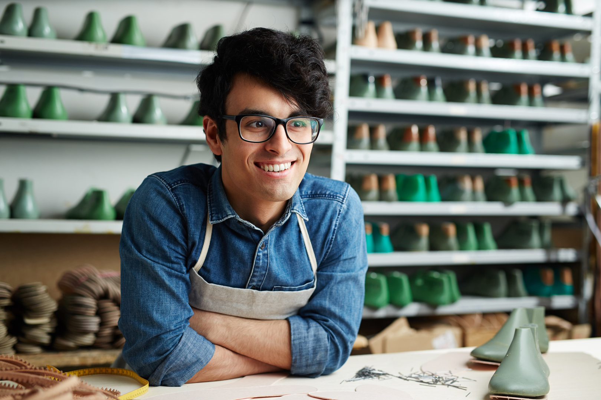
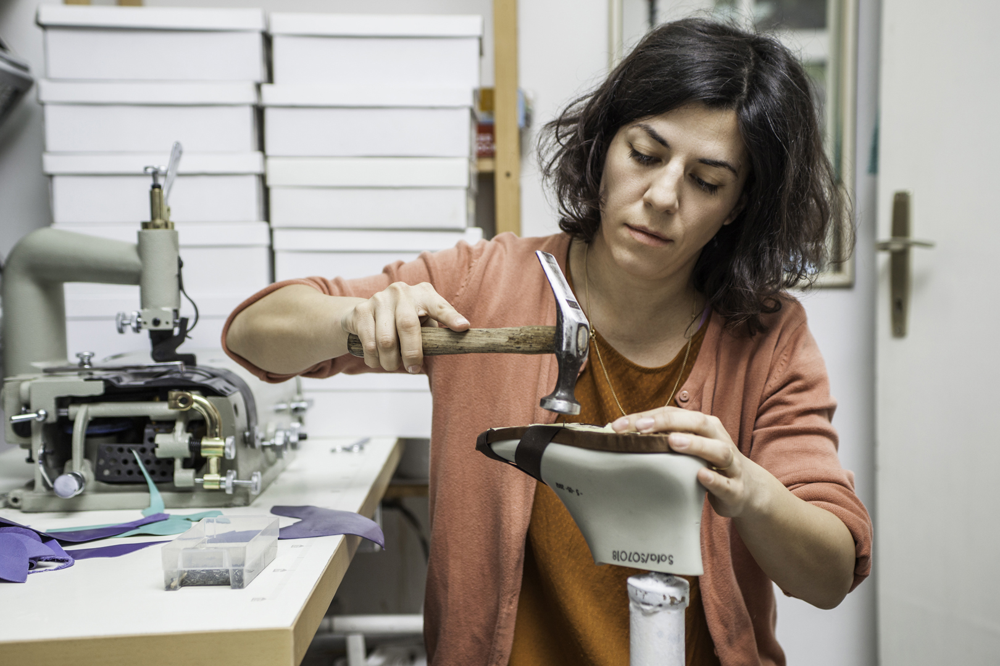
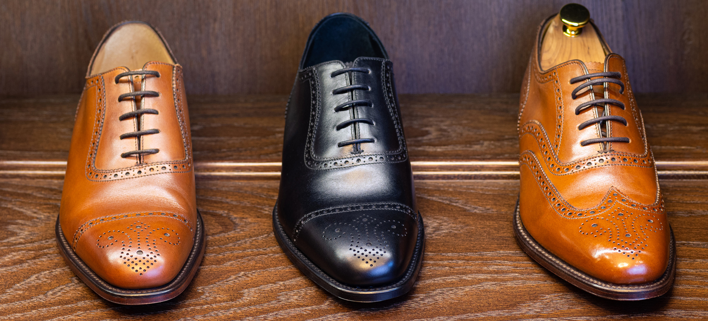
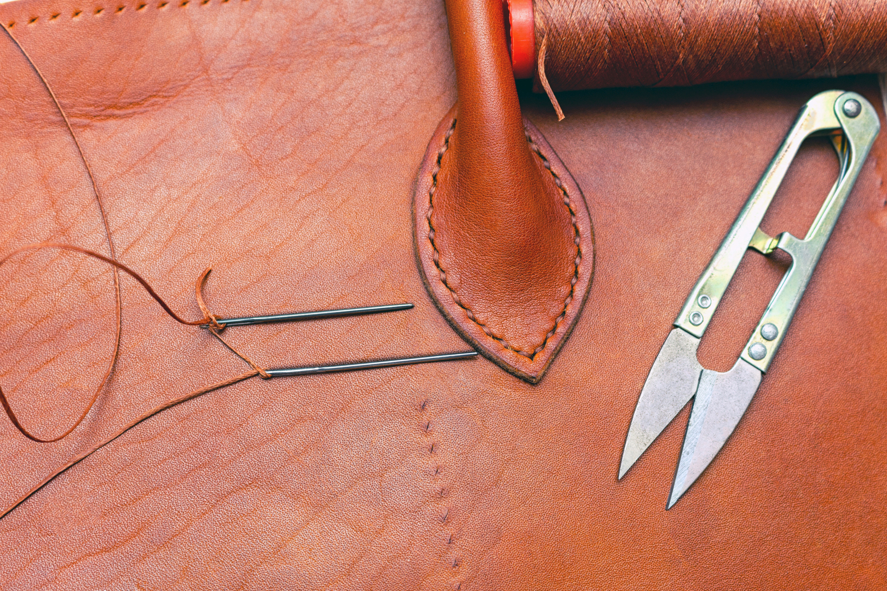
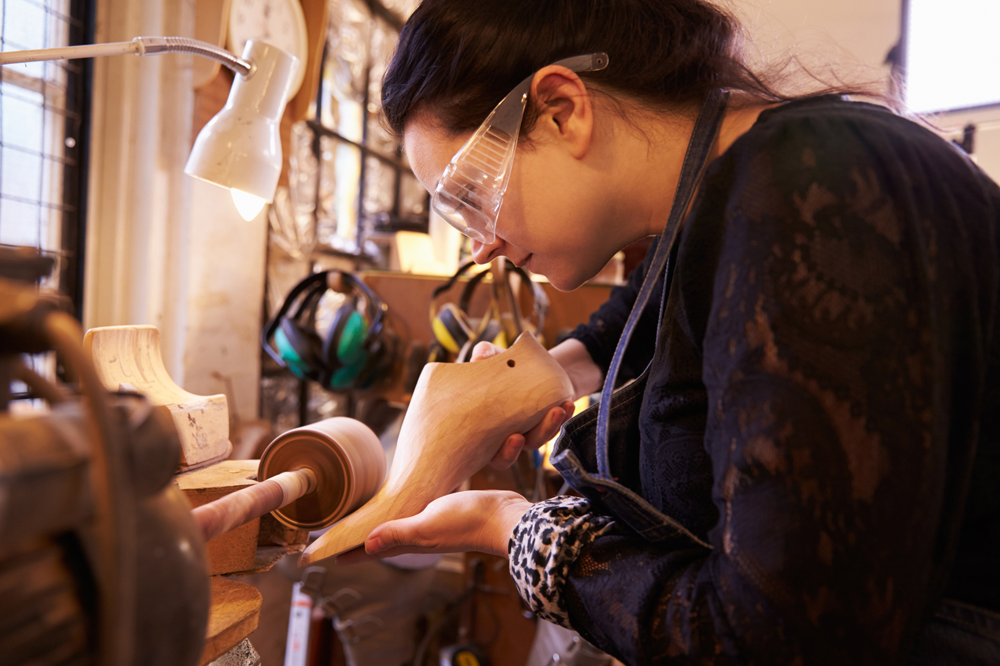

🎉 Feiern Sie mit uns! 🎉
September 2001 eröffneten wir Geschwister, Maria Gracia und Paolo
Zuretti, in Bad Godesberg unsere Schuhmanufaktur. Zuvor hatten wir
beide den Meisterbrief erworben und mehrere Jahre in verschiedenen
Berufserfahrung gesammelt.
Im September 2021 feiern wir also das 20-jährige Bestehen unserer
Manufaktur. Wir freuen uns auf Ihren Besuch – ob online oder direkt
in der Alten Bahnhofstraße 5a in Bonn-Bad Godesberg.
Chronologie
September 2001
Gemeinsam eröffnen wir Geschwister, Maria Gracia und Paolo Zuretti,
in Bad Godesberg unsere Schuhmanufaktur.
Wir haben beide den Meisterbrief erworben und bereits mehrere Jahre
Berufserfahrung in verschiedenen Werkstätten gesammelt.
September 2004
Lukas Bischoff beginnt seine Ausbildung bei uns. Heute ist er im
Team der Spezialist für die Schäfte-Herstellung.

August 2007
Das WDR-Regionalfernsehen besucht die Manufaktur und porträtiert
unsere Arbeit.
Das ist der Durchbruch: Viele potenzielle Kunden und Kundinnen
werden auf uns aufmerksam – nicht nur im Rheinland.

Mai 2010
Neben Werkstatt und Laden eröffnen wir einen kleinen Showroom.
Hier ist eine individuelle Atmosphäre beim Maßnehmen und bei der
Anprobe gewährleistet.
Oktober 2014
Die Schuhmanufaktur Formschön präsentiert ihre Modelle auf der
Leistungsschau des rheinischen Handwerks in Düsseldorf.

Dezember 2015
Wir beteiligen uns an der Neuordnung des Berufs
„Maßschuhmacher/-in“, damit unser beruflicher Nachwuchs auf der Höhe
der Zeit ist.
März 2016
Wir sind Gast auf der europäischen Leder- und Mode-Messe in Brüssel.

Januar 2017
Das alljährliche Treffen der Maßschuhmacher aus dem
deutschsprachigen Raum findet diesmal bei uns, in der
Schuhmanufaktur Formschön, statt.
Dezember 2017
Wir zeigen bei den „Tagen der Manufakturen“ in Berlin die Fertigung
von Maßschuhen.
September 2019
Leonie Meißner beginnt bei uns die neue Ausbildung zur
Maßschuhmacherin.

September 2021
🎉 Wir feiern unser 20-jähriges Bestehen. 🎉